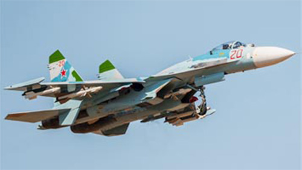

Су-27

- Разработчик: ОКБ Сухого
- Страна: СССР
- Первый полет: 1977
- Тип: Многоцелевой истребитель
В конце 1960-х в ряде стран началась разработка перспективных истребителей 4-го поколения.
Первыми к решению этой проблемы приступили в США, где ещё в 1965 году был поставлен вопрос о создании преемника тактического истребителя F-4C «Фантом». В марте 1966 года была развёрнута программа FX (Fighter Experimental).
Проектирование самолёта по уточнённым требованиям началось в 1969 году, когда самолёт и получил обозначение F-15 «Игл» (англ. Eagle). Победителю конкурса по работе над проектом, фирме «Макдоннел Дуглас», 23 декабря 1969 был выдан контракт на производство опытных самолётов, а в 1974 году появились первые серийные истребители F-15A «Игл» и F-15B.
В качестве ответа в СССР была развёрнута программа разработки перспективного фронтового истребителя (ПФИ) на конкурсной основе.
К теме были подключены три конструкторских бюро. Первоначально ОКБ Сухого в программе не участвовало, однако ещё в 1969 году в ОКБ Сухого были выполнены первичные проработки по теме ПФИ, и в начале 1971 года было принято официальное решение о начале работ над изделием Т-10.
Техническое задание на вновь создаваемую машину было ориентировано на превосходство над F-15.
Тактика воздушного боя предусматривала в том числе и ближний манёвренный бой, вновь признанный на тот момент основным элементом боевого применения истребителя[4].
В 1972 году состоялись два научно-технических совета с представителями «фирм» Сухого, Яковлева и Микояна, по результатам которых проекты Як-45 и Як-47 выбыли из конкурса. Руководство КБ МиГ вышло с предложением разделить программу ПФИ и создавать параллельно два истребителя — тяжёлый и лёгкий, с максимальной унификацией оборудования, что ускорит и удешевит производство и позволит иметь в стране парк двух типов самолётов, ориентированных каждый на свои задачи.
| Летно технические характеристики | |
|---|---|
| Модификация | Су-27 |
| Размах крыла, м | 14.70 |
| Длина, м | 21.935 |
| Высота, м | 5.932 |
| Площадь крыла, м2 | 62.0037 |
| Масса, кг | |
| - пустого самолета | 16300 |
| - нормальная взлетная | 22500 |
| Тип двигателя | 2 ТРДД АЛ-31Ф |
| Максимальная тяга, кН без форсажа | 2 х 74,53 |
| Максимальная скорость , км/ч | 2500 (М=2,35). |
| Практическая дальность, км | 3680 |
| Практический потолок, м | 18500 |
| Макс. эксплуатационная перегрузка | 9 |
| Экипаж, чел | 1 |
| Вооружение: | 30-мм пушка ГШ-301 (150 патронов). Боевая нагрузка - 6000 кг на 10 узлах подвески: Может устанавливаться: до 6 УР класса воздух-воздух средней дальности Р-27ЭР1, Р-27ЭТ1, Р-27ЭТЕ и Р-27ЭРЕ, до 4 УР малой дальности Р-73 с тепловым ГСН. |